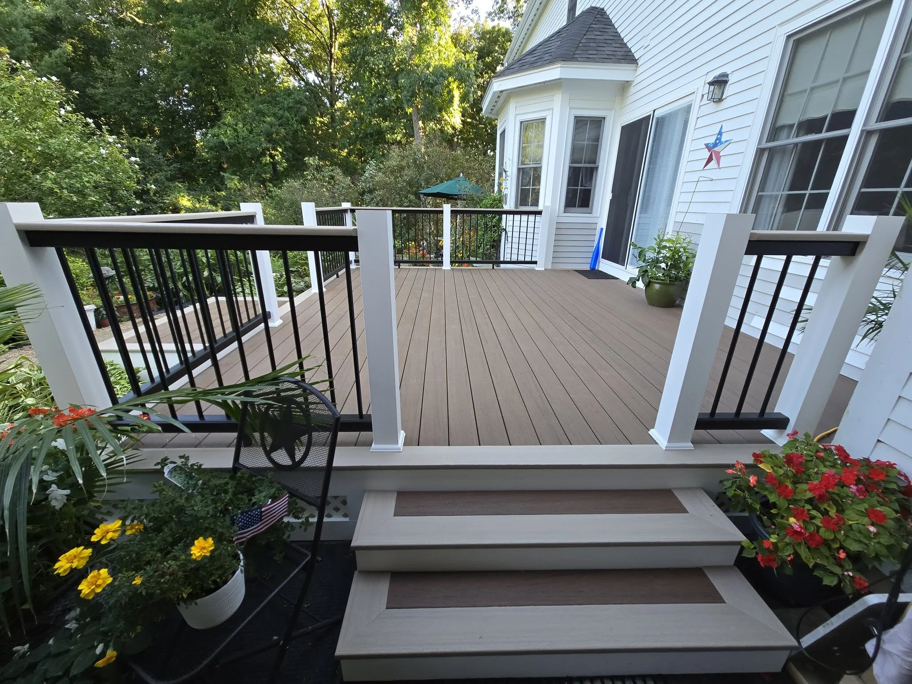
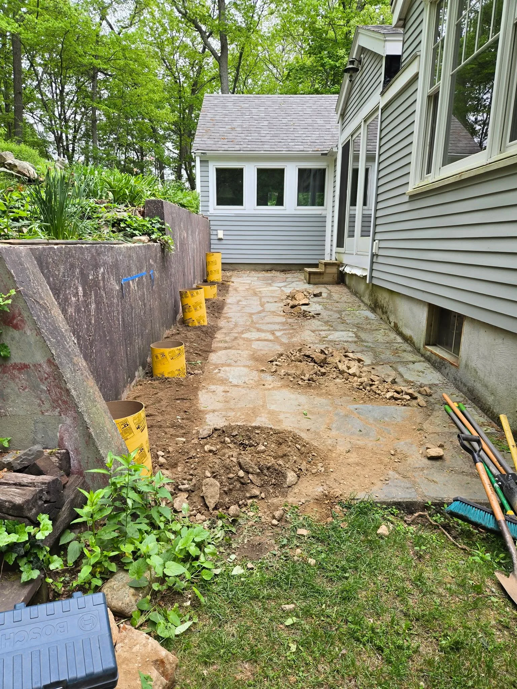
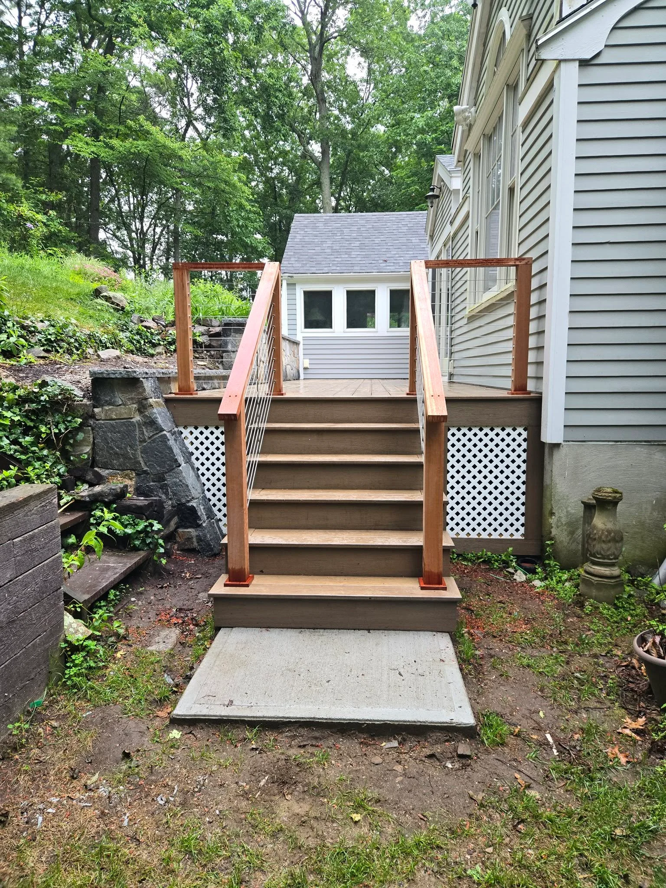
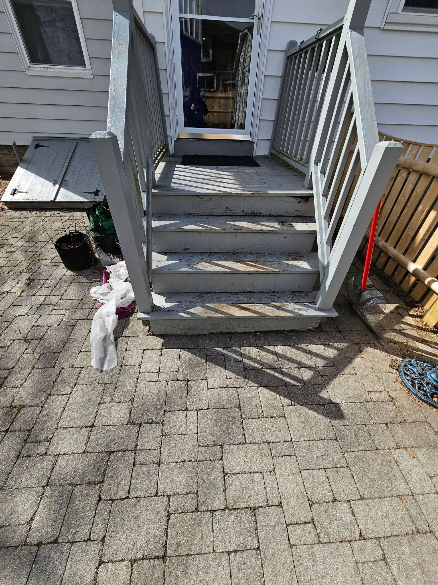
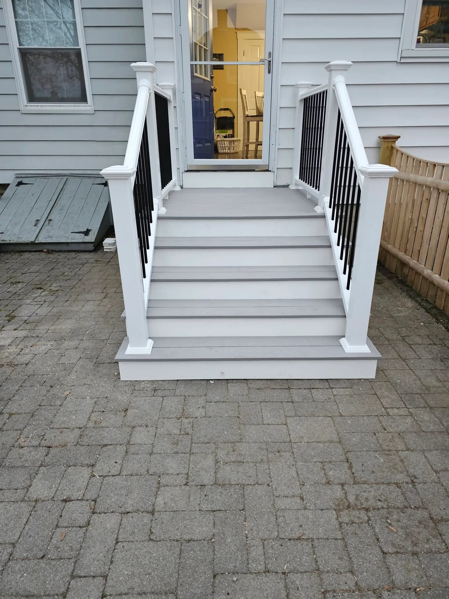
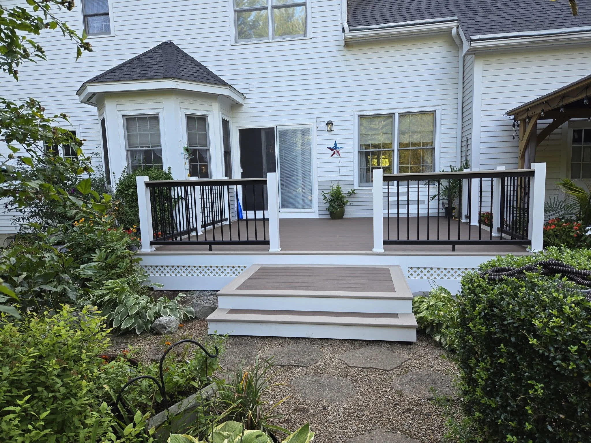
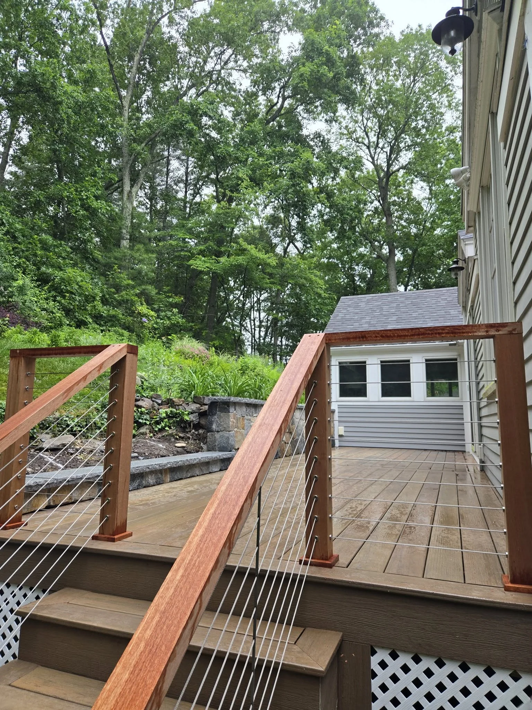

Decks &
railings
New decks and deck rebuilds, including framing, decking, stairs, and railings.
View deck projectsGEORGETOWN, MASSACHUSETTS
Decks, stairs, siding, and custom carpentry for homes in Northshore Massachusetts and nearby towns.

Discuss your project with Brett Eglin.
Send a textSERVICES
Our work includes deck construction, stair replacement, siding, and custom sheds. Contact Brett to discuss the scope of your project and scheduling.
New decks and deck rebuilds, including framing, decking, stairs, and railings.
View deck projectsReplacement of exterior staircases and landings, with new treads, posts, and railings.
View stair projectsShingle siding replacement, exterior trim, and custom sheds built to fit your property.
View siding projectsBEFORE & AFTER
Compare the before and after photos, or open a project to see the construction process.


DECK CONSTRUCTION
New framing, decking, and stairs with wood posts and cable railings.
View project photos

EXTERIOR CARPENTRY
Rebuilt landing and steps with white posts and black balusters.
View project photosDrag to compare. You can also use the arrow keys.

FEATURED PROJECT
Framing, decking, stairs, and railings
More decks, stairs, siding, and interior projects.
View the full gallery
ABOUT THE BUSINESS
Brett Eglin owns Eglin Construction LLC, a residential construction and carpentry business serving Northshore Massachusetts and nearby towns.
For project inquiries, contact Brett directly by phone, text, or email. Include your location and a description of the work you need.
PROJECT INQUIRIES
Call or text to discuss the work, your location, and availability.
Please include your town, the work you need, and when you’d like to start.